|
|
| zoanthids text index | photo index |
| Phylum Cnidaria > Class Anthozoa > Subclass Zoantharia/Hexacorallia > Order Zoanthidea |
| Sea
mat zoanthid Palythoa tuberculosa* Family Zoanthidae updated Dec 2019
Where seen? Like some weird rubber mat that coats rocks and rubble, this colony of animals is commonly seen on our Southern shores. It is often found in areas where waves crash onto the rocks in shallow waters. When the animals find a happy spot, the colony can cover a large area. Features: Colony 20-40cm, each polyp about 1-2cm in diameter embedded in a common tissue. The polyp has a thick and short body column, topped by a wide oral disk edged with tentacles in two rows. When the polyps are expanded, their oral disks and tentacles may hide the common tissue. When the colony is out of water, the tentacles and oral disks are tucked into the body column, leaving on small puckered holes on the surface of the common tissue. Colours seen include brown, cream and yellow. |
|
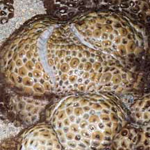 Coating a rock in a rubbery mat. 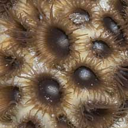 Terumbu Pempang Tengah, May 11 |
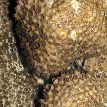 St. John's Island, May 06 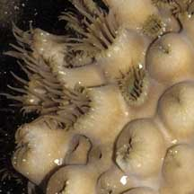 |
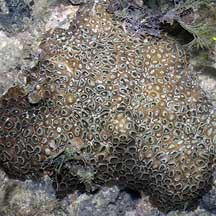 Sisters Island, Jul 06 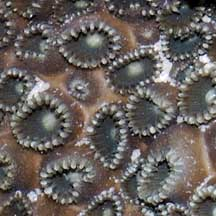 |
| The common tissue is thick and rubbery. It also feels rough to the
touch because the tissue may be strengthened by incorporating fine
sand and other tiny debris. One study suggests these incorporated
elements can make up 45% of the total weight of the colony! Some sea mat species can grow rapidly, up to 0.4cm a day. They are quite aggressive and often overgrow other animals in the surrounding area. Some sea mat species have 'cracks' in the mat which are caused by clumps of polyps that are separating. Sometimes confused with sponges, ascidians and other blob-like animals. Here's more on how to tell apart blob-like animals. Toxic mat: Sea mat zoanthids contain the highly toxic palytoxin. It is reported that the Hawaiian natives produced poisoned arrows by rubbing the tips on the zoanthid Palythoa toxica. It is believed that the toxins are not produced by the animal but by bacteria that live in symbiosis with the polyps. |
*Species are difficult to positively identify without close examination.
On this website, they are grouped by external features for convenience of display.
| Sea mat zoanthids on Singapore shores |
On wildsingapore
flickr
|
| Other sightings on Singapore shores |
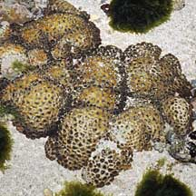 Pulau Biola, Dec 09 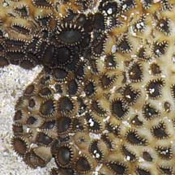 |
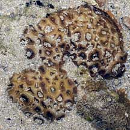 Terumbu Berkas, Jan 10 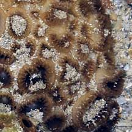 |
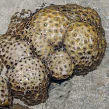 Pulau Pawai, Dec 09  |
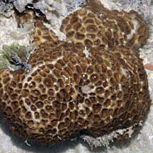 Pulau Salu, Aug 10 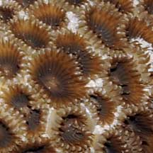 |
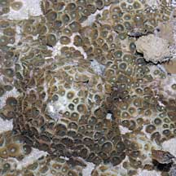 Pulau Salu, Aug 10 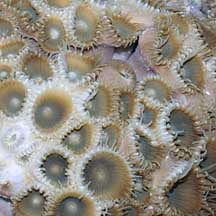 Bleaching. |
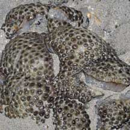 Pulau Senang, Aug 10 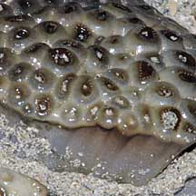 |
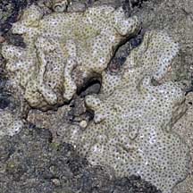 Terumbu Salu, Jan 10 |
 Pulau Salu, Jun 10 |
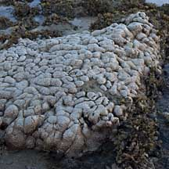 Pulau Berkas, May 10 |
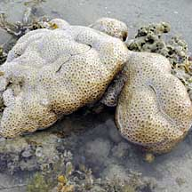 Terumbu Berkas, Jan 10 |
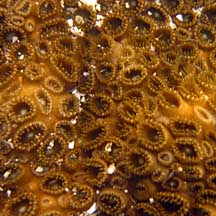 South Cyrene, Oct 10 |
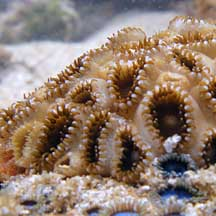 Terumbu Bukom, Nov 10 |
| Acknowlegement With grateful thanks to Dr James Reimer of JAMSTEC (Japan Agency for Marine-Earth Science and Technology) for identification of these zoanthids. References
|